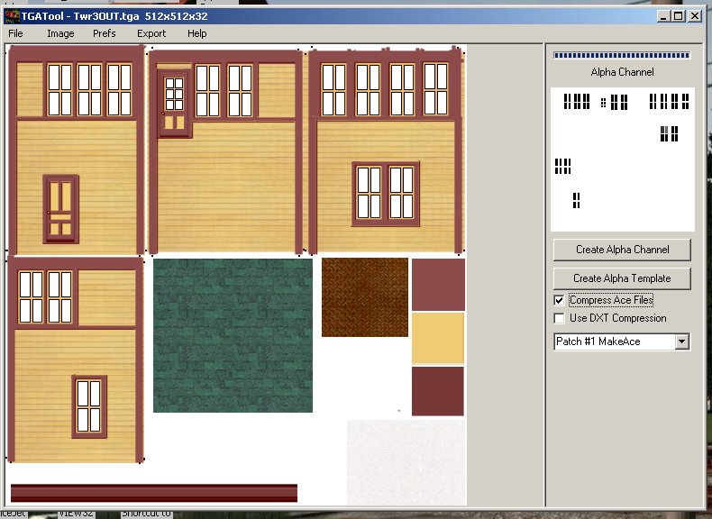
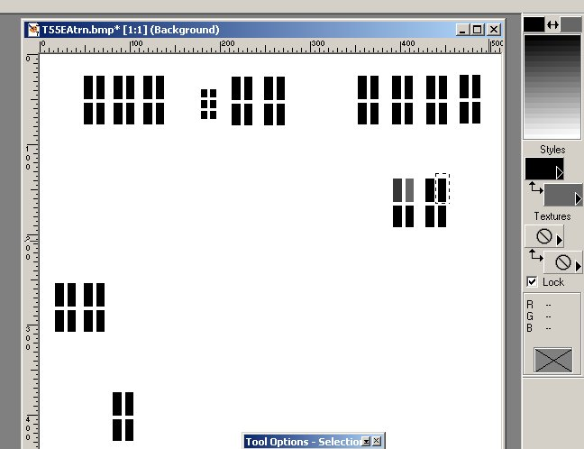
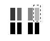
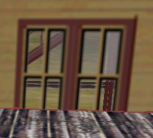
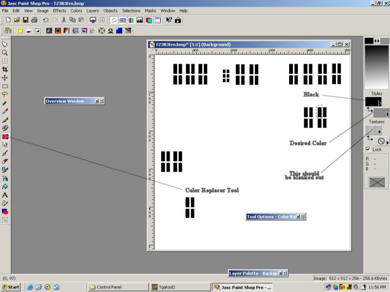
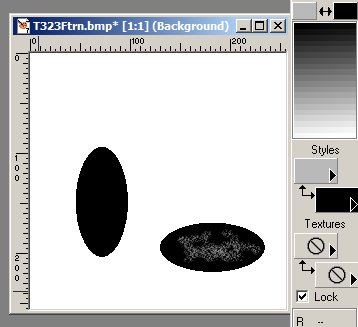
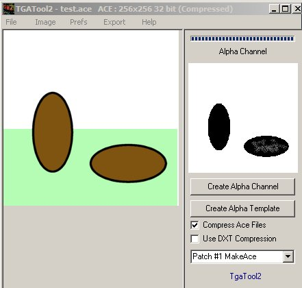
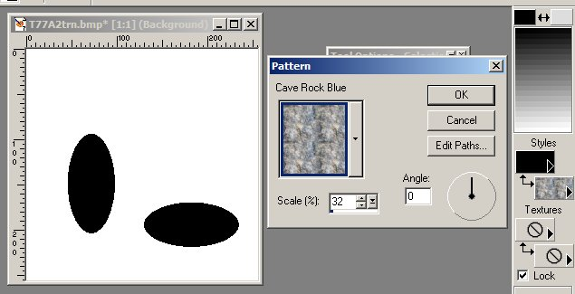
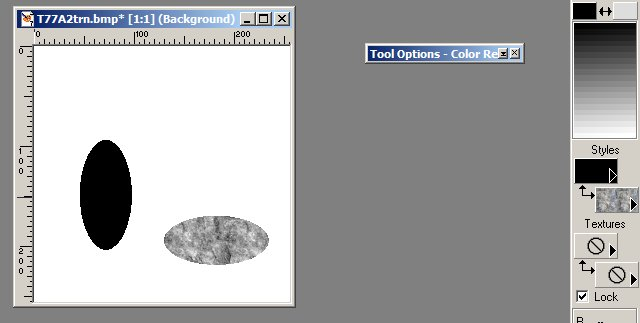
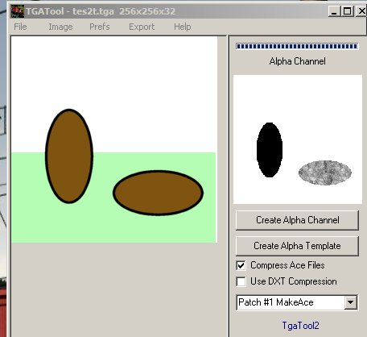

How to Make an Alpha Channel Using Paint Shop Pro and TGATool2
by Paul DeVerter
A Port City Car Co. Project Copyright © 2004
This is Chapter 3 in the series of tutorials having to do with "How to Make an Alpha Channel". It also constitutes an addition to the Dogwaffle tutorial by Bill Hall (see credits at the end of this tutorial), and shows how to change the transparency of the alpha window for use in MSTS.
After you have created a structure or piece of rolling stock in TSM, and have made the windows transparent by using Dogwaffle or PSP, you now have a .TGA file with an alpha channel. You must convert this to an .ACE file to use in the Sim, and TSM will not change a .TGA file to an ace and produce an alpha channel. Seems like it should, because, as Ted Ahner said, it uses the same makeace file as does TGATool. Nonetheless, TSM will not do so. {This statement is proven wrong; see the last paragraph of this tutorial}.
So, crank up TGATool again, and open the .TGA file with the alpha in it. (Or you could also use the .ACE file you have already created, or have available, which includes the alpha). It looks like this:

Now, in the menu at the top, click on Image, and then click the option to send the alpha channel to your drawing program. Alternatively, you may right click on the Alpha Channel Texture on the right, and do the same thing. I have the preferences set up so that it automatically goes to Paint Shop Pro 7. Do not close TGATool.
As you know if the alpha is black, then it is transparent, and if white it is opaque, and will let the original texture color show through. So, if we want to vary the transparency from clear glass (black) then we must turn the selected window glass from dead black to some gray color.
PSP will open when you send the image, and here is what you will see:

Notice the only colors available to you are black to white, in the upper right. What I decided to do was change the black to various shades of gray in the row of 4 windows where the marching ants are crawling around.
Now sometimes the alpha windows are not dead black when you transfer the alpha texture from TGATool to PSP. Instead of 0.0.0 they may be 5.5.5 or so. If this happens to you, then you may first want to use the Color Replacer to change them all to dead black, using the technique next described. Or at least they should all be the same, and pretty black.
Assuming the alphas are all the same black, I used the Rectangular Selection Tool to draw a box around each window pane, and then used the Color Replacer to change the black to a different shade of gray in each of the 4 windows. So, click on the lower Styles box, and up opens a new color window filled with a whole bunch of black to gray to white boxes. Not knowing which to chose, I clicked on one, and it showed the gray to be 54, 54, 54. So I used it first, and in Color Replacer (with a very low tolerance) double right clicked the mouse, which changed the black inside the marching ants to a shade of gray. This is the left one in the group of 4. Then I did the same process for the 2nd, and changed it to 102, 102, 102. And the 3rd was changed to 134, 134, 134. Finally the 4th one was changed to 182, 182, 182. I think the alpha color has been picked and the area selected in the photo above, but the Replacement Tool has not yet been activated.

And here they are as changed, and you can see the 4 shades in top row, and the 4 black alphas in the bottom row.
Now, go to File | Save (not Save As) the file with your four changes. Then close PSP. And you are back in TGATool. If you are using the latest version of TGATool, then the changes you made will already show up for you. If you are using an older version, you may need to use the "reload after edit" procedure as explained in the TGATool help file.
In TGATool, go to Export and export the tga file, as changed, as an "Ace (alpha) - not DXT", sending it to wherever you are keeping your copies of the ace file for the project, overwriting any earlier version. Then, send a further copy to your Route\Textures folder if it is scenery. Now, go into MSTS, and drive to the location of the scenery item, and here is what you have:

The 4 upper windows are no longer transparent, but are translucent, to varying degrees, while the 4 lower windows are still all transparent. I think the 182 gray is too dark, and the 54 does not show much of anything. So, if you want a window that is not fully transparent, pick a gray in the range of 102 - 134 or so, and see how you like it.
Now I have not figured out how to make the glass dirty, streaked, or speckled, but it probably involves spattering some white on the alpha for the individual windows. I don't think it would matter what you did to the non-alpha portion of the texture.
In answer to a question on how to paint on the gray color:
I think the problem you are having is using the Color Replacer tool. You do not paint on the gray, but instead replace the black with a gray color.
First I use the Selector to draw a marching ant box around the window of alpha I want to change. You did that.
Then I change to the Color Replacer tool. There it is necessary to set the tolerance, and I have it set at 1. Next, you need to have the foreground color set to dead black (or whatever color of black that the alpha you are trying to change may be), because this is the color you are trying to change, and yours is gray. And the background color must be set to the gray color you want to be substituted for the dead black. Then you use the mouse, and double right click the area within the marching ants, and presto change-o it goes from black to gray.
See if this helps:

Making the glass sort of dirty or splotched
I have been playing around again w/ the alpha thing.
This time I did not use Dogwaffle, but instead did it all from PSP7.
The object was to try to get some noise in the glass, like dirt, or streaks. So, in addition to using a gray color in the Styles foreground box, I also inserted some clouds in the Texture background box, the one with the null above. This did not work, so back to the drawing board.
What needs to be done is to make the resulting ace file have various shades of gray in it. One way to do this is to convert the black to a less transparent gray color, as previously mentioned. Then the thing to do is to paint on the gray with an even lighter gray, which makes the alpha sort of dirty. You can do this by using the air gun to spray some lighter (more opaque) gray onto the existing gray. Then after you are finished in PSP, save and thus send the whole alpha back to TGATool for processing as an ace file.
Look at these shots:

Here the black alpha has been sprayed with a lighter gray by using the airbrush. Then when you save this PSP file, and go back to TGATool, here is what you have:

< >Now we have an alpha channel that is black with gray splotches in it. These splotches will be more opaque than the black portion, so the resulting window will appear to be dirty or at least not uniform. You can do the same thing with a less than transparent window - that is, add some lighter or darker gray noise to a gray window, and you will have a dirty or splotched translucent window.Another way to end up with a splotched alpha is to use a texture in the background Styles box.
Look at these photos for an example:

Here we have an alpha channel that has been sent from TGATool to PSP. What we want to do is change the uniform black alpha to a mottled gray, which will result in mottled glass transparency. So in the Styles background window pick a pattern, here Cave Rock Blue. The only colors we are going to get are shades of black to gray, because the box in the upper right has only those colors available. Use the Scale to make a pattern that is large enough to mess up the black, here 32. Now we need to use the rectangular selection tool to draw an outline around one of the alpha channels, so here is the next step:

What we have done is use the selection tool to isolate the lower horizontal ellipse, and then the Color Replacer tool to change the black ellipse to a mottled texture. Now the thing to do is to send it back to TGATool, and this is done by going to File | Save, and then getting out of PSP. So, we are back to TGATool, and here is what we see:

Now the alpha channel is no longer black (fully transparent) but is instead mottled gray, which means the window will show various levels of translucency - thus being dirty, mottled, or splotched, as we were hoping for. I have not yet figured out how to make the translucency any particular level, but think it may involve using a background Textures color of a light gray plus the use of a pattern in the background Styles box. Keep in mind that while a black alpha acts transparent, a white alpha is not opaque, instead it allows the underlying color to show through.
The final thing is - Contrary to the second paragraph at the start of this tutorial, I have found that you can indeed generate an ace file from a tga file in TSM. I did not have to use the TGATool to generate the object's ace file with its alpha channel. So, that saves a couple of steps.
Credits and Thanks to:
Bill Hall, Tim Muir, Ted Ahner - all gave advice and tested the tutorial. Ted was particularly good at pointing out bugs, and helping me get this tutorial into the form you are now reading.
The excellent Dogwaffle tutorial mentioned in the first paragraph is found at the Port City Car Company site: http://www.paradesquare.ca/railway/tutorials.htm.
Dogwaffle comes as a free paint program in v1.1, and a more complicated pay ware v2.1.
Find it by searching with Google on the WWW.